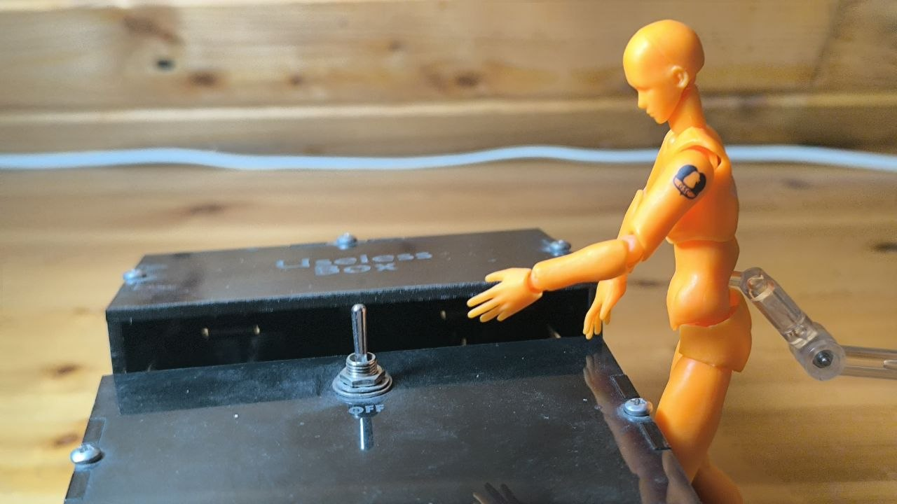
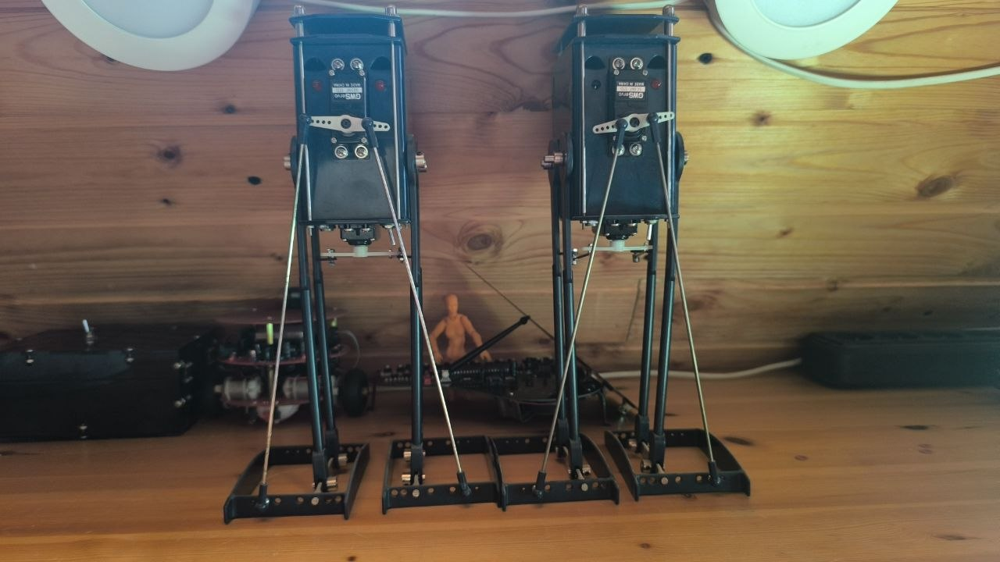
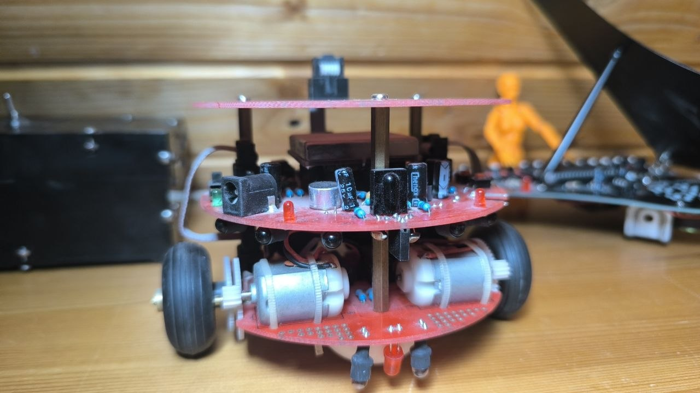
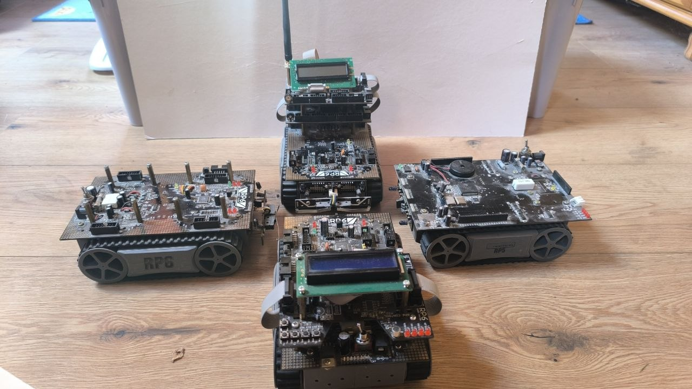
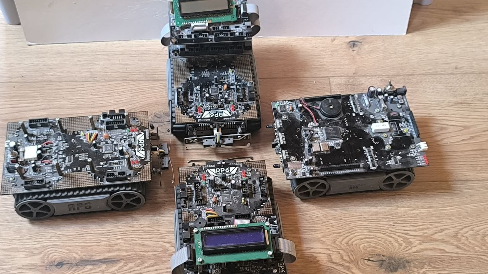
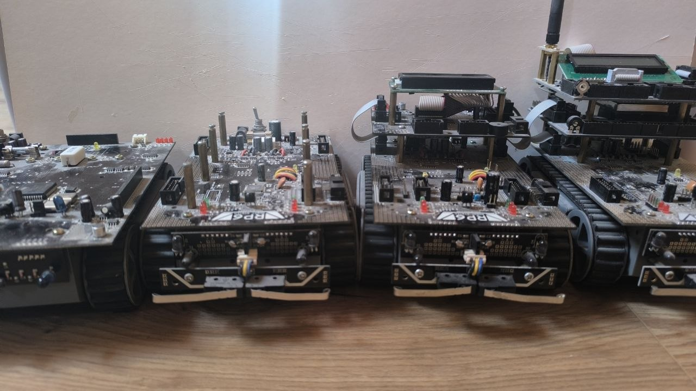
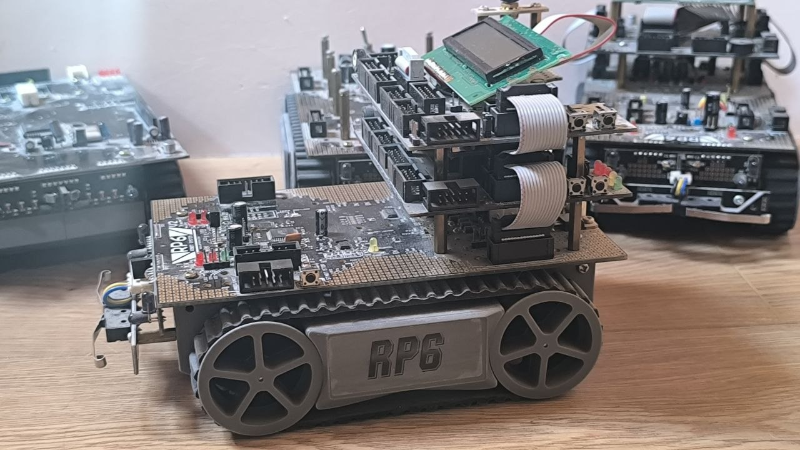
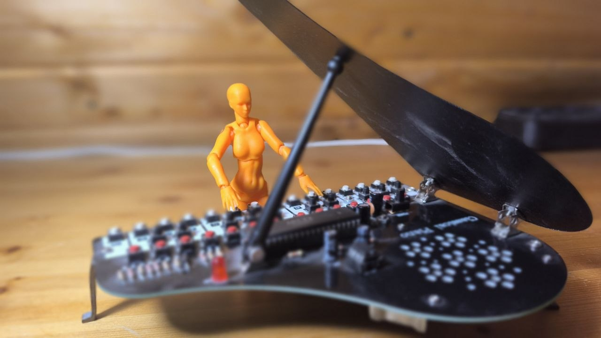

From One Servo to Multi-Processor
A robotics progression, built one complexity level at a time
Long before "lab automation" was a goal I could put into words, I was building small machines — first for my own curiosity, later with my kids, and eventually as teaching tools for students who had never touched a motor or a line of code. Looking back, four devices trace a surprisingly clean line from "just for fun" to "genuinely sophisticated embedded system." This is that progression, simplest to most advanced.
1. The Useless Box — one servo, maximum charm
Exactly what it sounds like: flip the switch on, and a small arm emerges from the box just to flip the switch back off. One servo motor, one microswitch, zero practical purpose — and by a wide margin, the single most popular thing I ever brought into a classroom. Students who had no interest in electronics would still ask to try it, and then ask how it worked.
Pedagogically, that's the whole point of starting here: before anyone cares about code or sensors, they need a reason to be curious. A box that mocks you for turning it on turns out to be a very effective reason.

2. Yeti — pure mechanics, no code at all
The Yeti is the opposite kind of lesson: a walking mechanism driven entirely by linkages and gearing, with no programmable logic anywhere in it. Everything it does is a direct consequence of its mechanical design — cams, joints, and gear ratios doing all the "thinking." It's a good reminder that not every interesting behavior needs a microcontroller behind it, and a useful contrast once electronics do enter the picture.
There are three of these in the collection — two fully built and walking, and a third still living in its spare-parts box, exactly where every maker's "I'll get to it" project ends up sooner or later.

3. Asuro — the first programmable step
Asuro is where code actually enters the story. An AVR-based platform with onboard sensors, it's most commonly introduced through a line-follower program — simple enough to understand in an afternoon, but a genuine first taste of the sense → decide → act loop that underlies everything more advanced later. Line following doesn't sound like much, but it's the first time the machine is reacting to the world rather than just executing a fixed motion.
The one still on hand is an early production version of the board. There was a second Asuro at some point — it's currently somewhere in storage, location unconfirmed, which feels like an appropriately honest footnote for a "history of things I've built" page.

4. RP5 / RP6 / RP6v2 — the sophisticated endpoint
The fleet at the top of this progression is a small collection of tracked robots spanning roughly a decade of embedded robotics evolution — from the original Conrad Robby RP5, built around an interpreted BASIC dialect with no feedback sensors at all, through three generations of the Arexx RP6v2 platform, culminating in a genuine multi-processor master/slave configuration with closed-loop, PID-regulated motor control.
This is the point where "hobby project" and "real embedded systems engineering" start to overlap, and it deserves more space than a paragraph. The full technical write-up — architecture comparisons, the software toolchain shift, code, odometry math, and a contrast with modern platforms like ROS 2 — lives on its own page:
→ Read the full technical retrospective



Bonus: the Arexx Classical Piano
Not every Arexx kit was a robot. The CP-01K Classical Piano is a solder-it-yourself miniature piano — 25 keys across two octaves, about an hour to build, with 15 pre-loaded melodies and the ability to record your own. It sits in the same collection as the robotics fleet, mostly as proof that the same company making tracked robots for engineering students also made a genuinely charming little musical toy.

Why this matters now
None of these were built with "lab automation" in mind — they were built because building things is fun, and because watching a room of students light up over a box that just turns itself off is its own reward. But the throughline is the same one running through the rest of this site: start simple, add a sensor, then a feedback loop, then real computation. The AIY kits and the LeRobot arm sitting in my current workshop are just the next rung on a ladder I've apparently been climbing for a very long time.